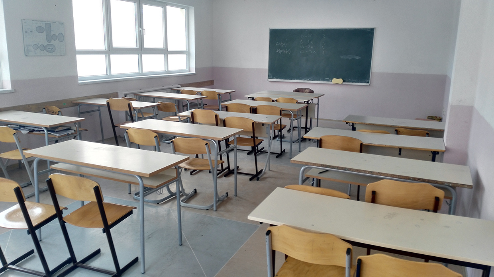
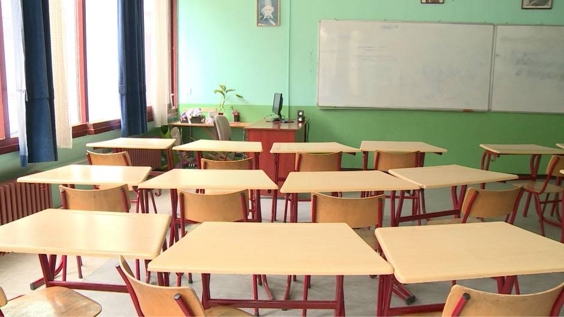
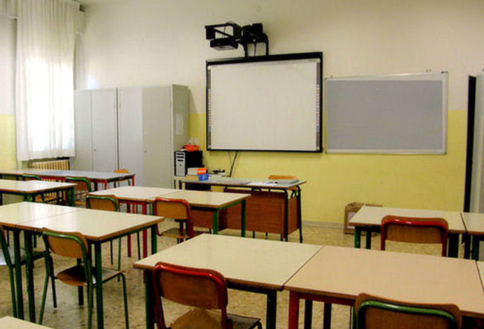
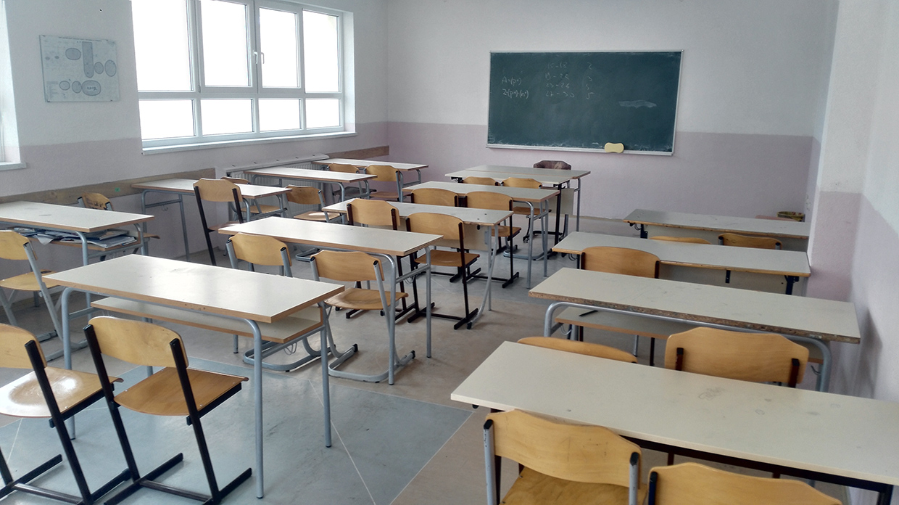
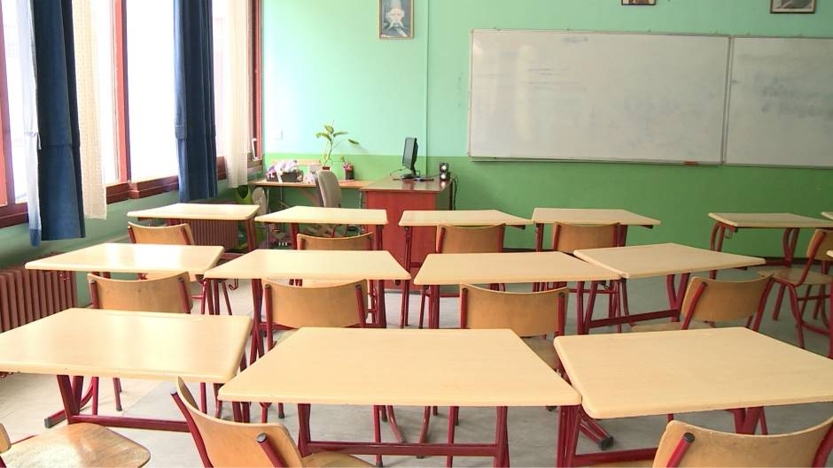
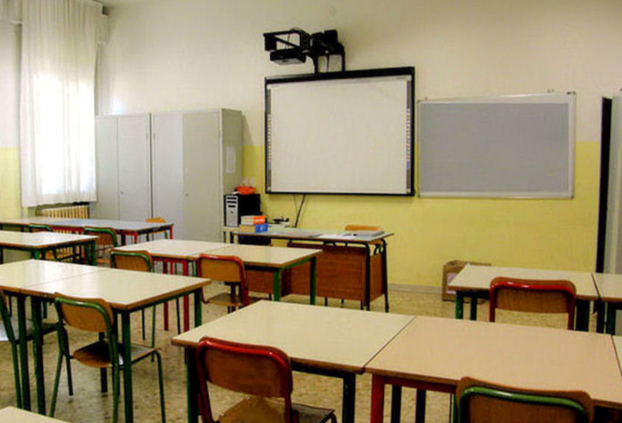

Škola italijanskog jezika osnovana je 1.1.2013. godine sa ciljem i željom da što više ljudi upozna sa Italijom, italijanskim jezikom, kulturom, običajima... Počeli smo sa jednom prostorijom, da bismo danas imali kompletnu malu školu, koja zadovoljava sve uslove boravka. Činimo sve što možemo kako bismo našim polaznicima učinili što prijatniji boravak. Naša škola zapošljava 15 vrhunski obučenih predavača italijanskog jezika, za sve uzraste. Svi naši predavači poseduju CILS - međunarodni sertifikat italijanskog jezika. Oragnizujemo razne izlete i putovanja u Italiju, Švajcarsku, Francusku ... Nastava se odvija u grupama, ali može i individualno po želji polaznika. Svi polaznici su podeljeni u grupe po nivoima znanja. Pre početka svakog kursa vrši se malo "testiranje" polaznika, kako bismo mogli na lakši način rasporediti grupe. Nakon svakog kursa A1 - C2, vrši se završni ispit odnosno testiranje pređenog nivoa, i ukoliko je učenik položio i zadovoljan može nastaviti nastavu na sledeći nivo. Predviđen broj časova po jednom kursu je 70 školskih časova, ali broj časova može varirati u zavisnosti od grupe, predzanja polaznika itd...
Za cenovnik i ostale informacije kontaktirajte nas.
< Ci vediamo >
 




